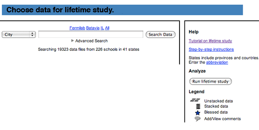
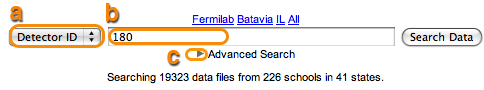
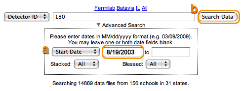
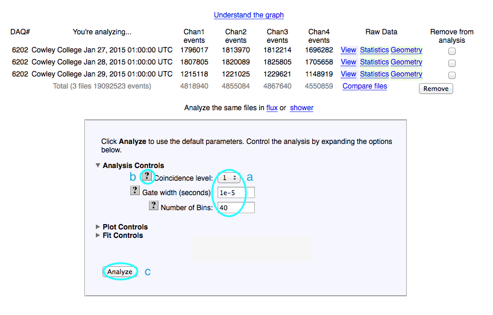
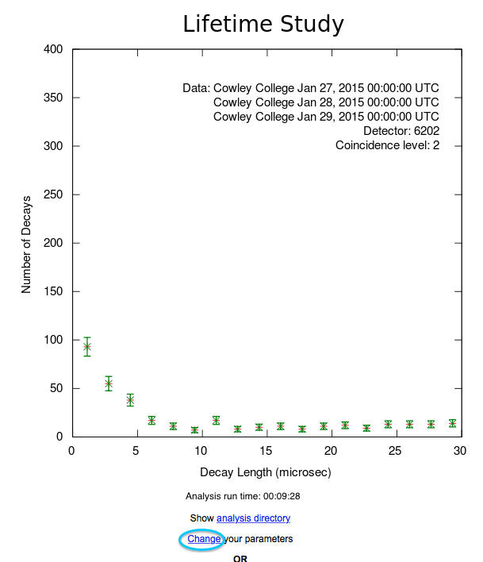
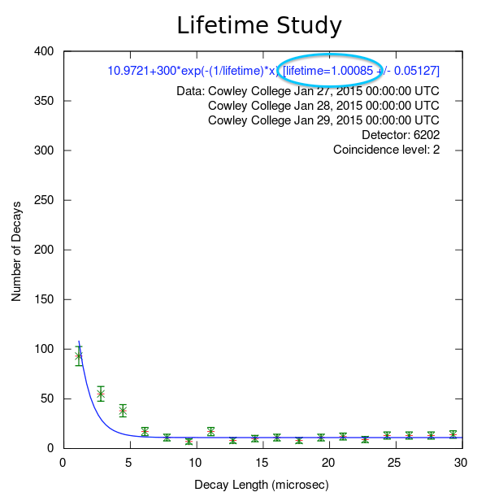

Lifetime studies can be pretty tricky, and it is sometimes hard to get the right input parameters.
- Keep two windows open, one with these instructions and the other with the lifetime study web pages.
- Go back and forth between them.
- Use the scroll bar to move the instructions.
- Look for the blue highlights for guidance.
The data for this plot is from detector 6202 at Spearfish High School and dated Jan. 27-29, 2015.
|
|
| Step 1: |
Click on the Data button in the main menu. |

|
| |
| Step 2: |
Click on the Lifetime button in the submenu. |
|
|
|
|
| Step 3.1: |
Look at the search page. On the right, one can find links to a tutorial, step-by-step instructions, FAQs and related milestones. The legend shows icons for information about each data file.
|
|

|
|
| Step 3.2: |
Search for data files from detector 6202 starting on 1/1/2015.
a) Select Detector Id in the pulldown list.
b) Enter 6202 in the search field.
c) Click on the little arrow next to Advanced Search.
|
|  |
|
| Step 3.3: |
a) Select Start Date in the pulldown list for dates, and
enter 01/01/2015 in the first date field.
b) Click Search Data.
Note: 'Blessed Default' refers to data files that have been blessed. To retreive all data files (blessed and unblessed), choose 'Blessed All'.
|
|

|
|
| Step 3.4: |
Click on the little arrow next to "Cowley College" to see the data
files associated with Cowley College.
|
|
|
|
| Step 3.5: |
Click on the little arrow next to "January 2015" to see the
data files for that month.
|
|
|
|
| |
| Step 4: |
The data files uploaded for January 2015 are displayed. See the data by clicking on the magnifying glass icon  next to the
date and additional information by clicking on the comments bubble . next to the
date and additional information by clicking on the comments bubble .
a) Select the data files labeled Tue 27, Wed 28, & Thu 29 by clicking
on their checkboxes.
b) Click Run lifetime study on the right.
|
|
|
| |
| Step 5: |
a) Look at the number of events in each channel. Use the default
analysis parameters: Coincidence level 1, Gate width
1e-5 seconds, and Number of bins 40.
b) Click on the question marks to learn more about each of these.

c) Click Analyze to use these parameters.
|
|

|
|
|
| Step 5.1: |
If the analysis takes very little time to run, the plot may show up quickly. More often, though, one gets a progress bar displaying how the analysis is doing. One can click on Queue study to allow the analysis to continue in the background. |
|
| |
| Step 5.2: |
Now click on Analyses on the navigation bar or analysis list in the text to see the job's progress. |

|
|
|
| Step 5.3: |
When the job is done, the user will see an entry on the Analysis List like this. Click on the link and see the plot.
|
|
|
| |
| Step 6: |
Here's the graph of the muon lifetime (y: Number of decays vs. x: the
length in microseconds). The longer it takes to decay, the fewer the number of decays.
Click Change to change the parameters for the analysis.
|
|
| |
| Step 7: |
In the Analysis Controls section, set these parameters:
a) Choose 2 in the pulldown list for Coincidence level.
b) Change the Gate width to 1 e-4.
c) Change the Number of Bins to 60.
d) Click on the small arrow next to Plot Controls to change scales on the plot.
|
|
| |
| Step 8: |
In the Plot Controls section:
a) Enter 30 for X-max.
b) Enter 400 for Y-max.
c) Click Analyze.
|

|
| |
| Step 9: |
Notice that this plot is getting closer to what we want. Now we want to
add the Fit Controls.
Click Change parameters,
and go back to the analysis parameters page.
|
|

|
| |
| Step 10: |
In the Fit Controls section:
a) Click the little arrow to view the Fit Controls.
b) Set Fitting Turned On to Yes.
c) Set X-min of fit to 0.1.
d) Set X-max of fit to 100.
e) Set Fit Y-intercept to No.
f) Set Alpha to 300.
g) Set Fit Lifetime to Yes.
h) Set Lifetime to 2.0.
i) Set Fit Background to Yes.
j) Set Background to 1.
Click Analyze.
|
|
|
| |
| Step 11: |
Now we have a fit to our curve and want to save this plot.
Notice that these fit results indicate a muon lifetime of approximately 1.00 microsecond.
To get a better fit, one can go back and change parameters.
|
|

|
| |
| Step 12: |
Enter a name for the plot similar to, but not the same as, the one shown. Then, click Save Plot.
Each time through this tutorial, the user should choose a new name for the plot. It will be available for the poster.
|
|
|
| |
| Step 13: |
Note the successfully saved plot. Click Close.
One can create more plots for other channels or go back to choosing
a new data set by clicking Lifetime. At any time, click View Plots to see the saved plots.
|
|
|